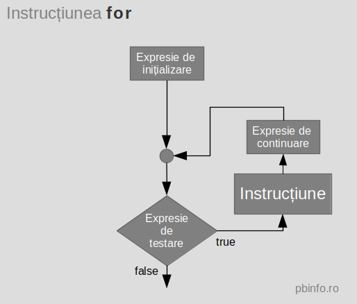

Instrucțiunea for este o structură repetitivă cu număr
necunoscut de pași și test inițial, echivalentă cu while.
for (Expresie_de_Initializare
; Expresie_de_Testare
; Expresie_de_Continuare)
Instructiune
Expresie_de_InitializareExpresie_de_Testare. Rezultatul se
convertește la bool.
true:Instructiune.Expresie_de_Continuare.false, se trece la instrucțiunea
de după for.

for este echivalentă cu instrucțiunea
while. Sintaxa descrisă mai sus este echivalentă cu:
Expresie_de_Initializare; while(
Expresie_de_Testare ) {
Instructiune
Expresie_de_Continuare; }
Instructiune se execută cât timp
Expresie_de_Testare este nenulă – condiție adevărată.
Expresie_de_Testare este de început vidă,
Instructiune nu se execută deloc, Expresie_de_Continuare nu se mai evaluează.
Instructiune poate fi orice fel de instrucțiune, dar
una singură. Dacă sunt necesare mai multe instrucțiuni, Expresie_de_Testare să-și modifice valoarea în
Instructiune sau la evalurea
Expresiei_de_Continuare. Altfel se obține o
buclă infinită.
de_Initializare,
de_Testare și de_Continuare sunt separate
prin caracterul ; – obligatoriu!
de_Initializare,
de_Testare și de_Continuare, eventual
toate, poate să lipsească. Expresie_de_Testare este vidă, rezultatul său este
nenul!
Expresie_de_Initializare se execută o singură dată.
Poate să conțină și declararea unor variabile. În acest caz,
variabilele vor exista numai în instrucțiunea for.
Următorul program citește valoarea variabilei n și calculează suma primelor n numere naturale. Rulați-l analizând rezultatul pentru diverse valori ale lui n, inclusiv 0.
using namespace std; int main () { int n; cin >> n; int S = 0; for(int i = 1; i <= n ; i ++) S += i; cout << S << endl; return 0; }